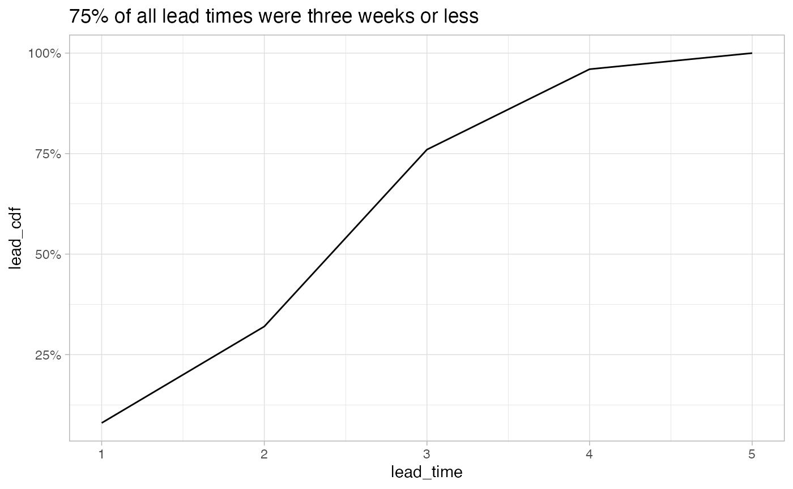

Exam 4
exam4-ops-online.RmdMaster Production Schedule (MPS)
- MPS represents an anticipated build schedule of finished goods (level 0 in the build of materials (BOM)).
- Finished goods represented by
- Forecast: what sales think we will do
- Actual orders: actual commitments for product
MPS Considerations
- Constraints
- Environments: mass production, job shop, project
Constraints
Can be less than, greater than, or equal to constraints.
Anything that limits the ability to produce (time most precious, always a less than or equal to constraint).
- Available time (capacity) machine hours
- Inventory: product on hand - can only sell what is available
- Money: capital to produce finished good (raw materials, labor, equipment)
- Market: could be a less than or greater than constraint - no demand or demand out strips the ability to produce.
- Seasonal demand: matching production with demand (trying to hit a moving target).
Master Production Schedule (MPS) Inputs
- What is the part number: level zero part - Bill of materials will dictate how many products we will need for the finished good.
- How many: Bill of materials (raw materials needed)
- When: when does the finished good need to be delivered by (forward/ reverse scheduling).
MPS Scheduling in Job Shops
Questions to ask when building the Master Production Schedule for job shops. Can be visualized with a gantt chart.
- How to distribute the load – assignment of jobs to work centers
- Work center: worker and machine
- How to sequence the jobs to the processing
- Order of operations - what is first, second, third.
Gantt charts can be drawn as a PERT diagram.
- Resource assignment: planning
Un-leveled (infinite capacity system): means we are building a time budget with unlimited constraints - will be shown as 104%
- Level the schedule by pushing different jobs/ activities to where there is capacity.
Leveled (finite capacity) schedule:
- Alternative to a leveled (finite capacity) schedule.
Drum-Buffer-Rope
Dr. Goldratt example for managing MPS
- Drum: the pace of the slowest machine.
- Everyone works to the same beat.
- Buffer: time or inventory. Where WIP goods are stored in-between stages.
- building extra time or product for when everything goes wrong
- Rope: tie the (constraint) back to the first resource.
- Warehouse for the release of material
Link the rope to the bottle neck (drum) - never want the Hereby to be idle since it is the longest running process.
Sequencing Rules
How to order the sequence for building the product to minimize delay.
- FIFO: First in first out
- SPT: Shortest processing time
- DD: due date
- S/O: slack per operation
Processing on time delivery:
- Job: name of the job
- Process time: time the job will take
- Due date: date the job will be due
- Flow time:
Job due date - cumulative time to complete previous work - Days late:
Flow time - Due date
Total Days Late = sum(days_late)
Better KPI is the percentage of jobs delivered on time.
Re-order the jobs using different strategies to improve the days late/ ratio of jobs completed on time.
- Shortest Process Time:
- Using SPT we can sort the jobs by the shortest process time
- This will reduce the total days late
- Percentage on time is not improved
- Lack capacity to complete work
- DD: Sort by earliest due date/
- Using DD we sort the jobs by the earliest due date
- Slight improvement over SPT
- Percentage on time is slightly improved
- Slack per operation (SPO)
Slack = Due Date - Process Time
- Critical Ratio =
Slack / Number of open Operations(given number)- Used for ranking
- The lowest critical ratio is the order we should order the jobs.
Johnson method of sequencing
Algorithm - two steps (with a bottle neck) bottle neck controls the pace.
- List jobs and times they will take
- Select job with the shortest processing time:
- If the job is at the first job center, push the job to the front of the schedule.
- If the job is in work center two (two job sequence), push the job to the end of the schedule.
- Break ties arbitrarily
- Repeat step two until all jobs are scheduled.
Sorting algo that orders the jobs by where they are located (work center one or work center two).
Some times jobs will have to wait in buffers if job center two is not ready for the part.
- Consider there might be time to transfer goods between work center one and two.
Three things that can happen with parts moving through a plant:
- Parts arrive at second work center just as workers capacity becomes available.
- Like a relay team (not likely)
- Parts arrive at second work stations and workers are idle (waiting for incoming work).
- Parts arrive at second work station and must wait in the buffer until there is available capacity.
- There is a queue or line of parts that need to be completed before the new part can be processed.
MPS Problem
- There is an order for 2,000 units with four operations to complete a unit.
- How many clock hours will it take to process if four hours are allowed between operations (time in transit between work centers)?
- How many parts need to be started in order to complete 2,000 units.
- Reduced by scrap/ quality issues
setup <- tibble::tibble(
# Time to set up the machine
service_set_up_time = c(40, 28, 17, 44), # Minutes
# The scrap that results from processing (not all parts pass inspection)
percent_scrap = c(1, 2.5, 1.5, 3),
# Operation time/ unit (how long the process takes)
operation_time_unit = c(2.41, 6.20, .76, 1.37),
# Operator lost time due to breaks etc.
operator_lost_time = c(.5, .5, .6, .4) # Hours
)
# *Scrap Factor Analysis*
# 2000 is the number of finished goods we want - start in reverse order.
scrap_4 = 2000 / (1 - .03)
scrap_3 = scrap_4 / (1 - .015)
scrap_2 = scrap_3 / (1 - .025)
scrap_1 = scrap_2 / (1 - .01)
# We need to start at least 2169 products in order to produce 2,000 finished
# goods. Don't forget to round up! Would rather have to many than not enough.
# *Operating Time Analysis*
# Operation 1: 40 mins + .5 hours
# This is the time that no work is done: divide by 60 to get hours
operation_1 = (40/60) + .5 # Hours
operation_2 = (28/60) + .5 # Hours
operation_3 = (17/60) + .6 # Hours
operation_4 = (44/60) + .4 # Hours
# This is the time available after set up time and breaks are subtracted
# Work is done in 8 hour shifts.
op1 = 8 - operation_1
op2 = 8 - operation_2
op3 = 8 - operation_3
op4 = 8 - operation_4
# There is 6.87 hours to complete operation 4 Problem: Putting it all together.
answer <- tibble::tibble(
# Operation
operation = c(1, 2, 3, 4),
# time to complete a unit
minutes_per_unit = setup$operation_time_unit,
# minimum units to start
quantity_required = c(scrap_1, scrap_2, scrap_3, scrap_4),
# Total minutes
total_minutes_required = minutes_per_unit * quantity_required,
# Convert to hours
total_hours_required = total_minutes_required / 60,
# Amount of time available after breaks and setup time
operating_hours_per_day = c(op1, op2, op3, op4),
# Total days to complete 2000 units
total_days = total_hours_required / operating_hours_per_day,
# 8 Hours in a working day - Since my final number is recorded in days (total
# hours required / operating hours in a day), multiply by the number of working
# hours in the day to get the final answer.
total_hours = total_days * 8
)
answer %>%
knitr::kable(digits = 2, format.args = list(big.mark = ','))| operation | minutes_per_unit | quantity_required | total_minutes_required | total_hours_required | operating_hours_per_day | total_days | total_hours |
|---|---|---|---|---|---|---|---|
| 1 | 2.41 | 2,168.61 | 5,226.36 | 87.11 | 6.83 | 12.75 | 101.98 |
| 2 | 6.20 | 2,146.93 | 13,310.95 | 221.85 | 7.03 | 31.54 | 252.34 |
| 3 | 0.76 | 2,093.25 | 1,590.87 | 26.51 | 7.12 | 3.73 | 29.81 |
| 4 | 1.37 | 2,061.86 | 2,824.74 | 47.08 | 6.87 | 6.86 | 54.85 |
Add back the amount of time it takes to transfer goods between operations.
# We have four hours between each operation: 3 delays at 4 hours
# 4 * 3 = 12
sum(answer$total_hours) + 12
#> [1] 450.973Master Production Schedule Time Phased Record
Calculating whats available and what’s available to promise.
- Available = previous available + MPS schedule receipts (if any) minus larger of forecast vs. orders.
- Available to Promise = MPS (scheduled receipts) - sum of actual orders up to but not include the next MPS.
Continue to carry the available into the subsequent weeks.
Initial Value (starting inventory) +
Available = MPS scheduled receipts (orders/goods received ) -
Larger of Forecast or Orders
Available = 5 (starting value) + 50 (MPS) - 20 (Forecast)
Available = 35 - Available to promise we only calculate for weeks where we have a MPS scheduled receipt (there is a value for MPS).
- When there are no orders, all MPS scheduled receipt (the final goods being produced/ delivered can be promised).
Available To Promise = MPS - Total Actual Orders up to the next MPS
Available To Promise = 50 - 12 (orders week 1) - 6 (orders week 2)
Available To Promise = 32Inventory Control Models
JIT is the way we run organizations today
Classic Inventory Control Models
- Economic Order Quantity (EOQ):
- Answers how many we should order at a time
- Trade off between constantly re-stocking and maximizing shipping and carry costs
- Reorder point: when do we place an order
- Max, min model of how much inventory we should carry at once
- When considering either strategy for managing inventory we assume:
- Demand is known: supermarket - soap, butter
- Stock quantity you expect to sell
- Demand is constant: relatively constant (smooth)
- Orders are received on time: goods are delivered on time
- Orders are received in full: complete orders
- Product cost does not vary: recalculating cost is not a big deal now
- No system constraints: there is extra capacity available
- Demand is known: supermarket - soap, butter
If there are items that meet these considerations than Economic order Quantity, and Reorder point may be valid methods for managing inventory.
Max-Min Model (EOQ/Reorder)
Resembles a saw tooth - meets the assumptions defined above.
- goods are ordered at time t where the fulfillment period (lead time) is equal to the number of goods on hand.
- Demand is constant
- Reorder point (ROP): when lead time is equal to the remaining products on hand.
- Orders must come in on time
- Orders must be complete
- Stock out: we run out of inventory
Inventory cost model
Total Cost = Order cost + Carry cost
-
Carry cost: goal is maximize the benefit of getting the best price while managing the costs associated with received larger orders. (balance bulk pricing with carry costs).
- Small orders: when the order is low, there are fewer costs associated with taking custody of the order.
- Large orders require staff, insurance, storage, opportunity cost, etc.
- Large orders: better unit economics - unit cost is better (cheaper)
- More frequent small orders will incur more shipping costs (order costs)
Goal is minimize the total
costs = order cost + carry cost-
EOQ: Minimum cost is the intersection of order cost and carry cost
- Economic Order Quantity
- Lead time is not included in EOQ problems.

Inventory Problem
- Calculating the inventory cost at EOQ
- Calculating the point at which we should order inventory Reorder point
# Average inventory cost
annual_useage = 24000
product_cost = 10
# Orders per year
order_annual = 6
# Units per order per year
units_per_order = annual_useage / order_annual
# Calculate the average amount of inventory on hand to determine
# the average cost of inventory
max_inventory = 4000
min_inventory = 0
# Average inventory on hand
avg_inventory = (max_inventory + min_inventory) / 2
# Average dollar investment for inventory
avg_inventory * product_cost
#> [1] 20000Calculating Inventory Cost at EOQ
Economic order quantity is the point that minimizes the carry cost and order cost. It is the number (quantity) of products to order.
- Calculating inventory cost is made of:
- EOQ: the optimal quantity to order
- Order cost: cost of the order
- Carry cost: the carry cost of the inventory
- Variables for calculating EOQ:
- OC: Order Cost
- AU: Annual Usage
- Price
- Carry Cost (percentage of price)
- Lead time is not included in EOQ problems.
EOQ = sqrt((2 * OC * AU) / (P * CC))Calculate inventory cost
At EOQ, order cost and carry cost will be equal (rounding might change result).
# Total annual order cost = (AU / EOQ) * OC
# Quantity
annual_useage = 15000
EOQ = 600
# Order cost per unit (given)
order_cost = 15
# Number of orders per year
annual_useage / EOQ
#> [1] 25
# Total annual order cost: cost to place all orders for the year
total_annual_order = (annual_useage / EOQ) * order_cost
# Total annual carry cost = ((EOQ * Price) /2) * Carry Cost
# Dollars
price = 5
# Percent 25%
carry_cost = .25
# Total annual carry cost - divide by 2 to get average dollar investment
total_annual_order_cost = ((EOQ * price ) / 2) * .25
# Answer
TotalCost = total_annual_order + total_annual_order_costWhat happens when we order some quantity other than EOQ?
- Inventory cost will increase
- EOQ gives the quantity to order that minimizes total inventory cost.
Quantity Discounts Problem
Should we pass on the discount or take it? Will the discount increase are carry costs greater than the amount of the discount?
order_cost = 15
carry_cost_pct = .3
annual_useage = 36000
# Price is we order 6,000 or more units (volume discount)
price_disc = 9.8
price = 10
# Quantity to order
EOQ = 600
discount_quantity = 6000
# Product A - No discount - EOQ
material = annual_useage * price
order_cost = (annual_useage / EOQ) * 15
orders_per_year = annual_useage / EOQ
carry_cost = ((EOQ * price) / 2 ) * carry_cost_pct
total_a = sum(material, order_cost, carry_cost)
# Product B - Discount - Discount Quantity
material = annual_useage * price_disc
# Order cost will decrease because of the discount
order_cost = (annual_useage / discount_quantity) * 15
orders_per_year = annual_useage / discount_quantity
carry_cost = ((discount_quantity * price_disc) / 2 ) * carry_cost_pct
total_b = sum(material, order_cost, carry_cost)
# We should take the discount - savings of $90.
waldo::compare(total_a, total_b)
#> `old`: 361800
#> `new`: 361710The average dollar investment for EOQ will be smaller than the average dollar investment for bulk purchases (saw tooth graph on top of discount chart with much lower inventory turn).
Calculating the ROI from taking the disocunt
ROI = Savings (from taking discount) / Investment (outlay for product purchase)
savings = 90
# Dollars spent to make purchase at discount price
discount_average_investment = discount_quantity * price_disc / 2
eoq_average_investment = EOQ * price / 2
# Bulk purchasing requires greater up front capital expenditure: calculate ROI
# on the incremental dollars required to hold the inventory.
extra_investment_required = discount_average_investment - eoq_average_investment
# ROI is calculated as the savings / the additional capital requirement for
# making the bulk purchase
ROI = scales::percent(savings / extra_investment_required, accuracy = .01)This ROI calculation is the opportunity cost of giving up $26,400 to bulk purchase the inventory.
We can ask the vendor to modify the minimum purchase order for the discount in order to reduce the carry cost (greater number of orders in the year) to boost the ROI.
Re-order point
The point at which we need to order new product so we don’t stock out.
# Total cost of the order - includes shipping, tariffs, etc.
order_cost = 12
# 20%
carry_cost = .2
annual_useage = 3000
price = 4
# Three weeks: Average lead time
lead_time = 3
# $20 stock out - opportunity cost: when you hit zero and cannot fill an order
# Do you lose the sale and future business.
stock_out_cost = 20
weeks_of_operation = 50
orders_per_year = 10Distribution for product orders: shows the distribution for quantity demanded during average lead times.
- Min units sold: 100
- Max units sold: 260

# The reorder point will be somewhere greater than zero
# Step 1: The minimum quantity to keep on hand
# Average Lead Time Usage = (annual usage / weeks ) * average lead time
average_lead_time_usage = (annual_useage / weeks_of_operation) * lead_time
# Answer 180 units is the minimum number of units we should keep in stock.
# Safety Stock: is the difference in current stock and reorder point
# Stock on hand: 200
# Reorder point: 180
# Safety Stock: 20
data.frame(
q_demand = seq(100, 260, 20),
q_freq = c(4, 10, 18, 32, 70, 28, 20, 12, 6)
) %>%
ggplot(aes(q_demand, q_freq)) +
geom_col()If we set the reorder point at 260 - the probability of a stock out is zero since we have never sold more than 260 units.
- To calculate the probability of a stock out we calculate the cumulative probability of
arrange(desc(order_point)) %>% cumsum(prob_q_demanded).- By choosing a reorder point with a lower probability of stock out, we reduce the stock out cost incurred.
- We need to balance the carry cost, with the cost associated with stock outs.
We have calculated that the reorder point is 180, but has a 33% chance of stock out according to historical data. We should set a higher reorder point to reduce the chance of stock out.
WE minimize the total cost = stock out cost + carry cost
Calculate the Stock Out Cost
# As we raise the reorder point, the stock out cost will be reduced.
stock_outt <- tibble(
reorder_point = seq(180, 260, 20),
probability_stock_out = c(.33, .19, .09, .03, .0),
stockoutcost = (orders_per_year * probability_stock_out) * stock_out_cost
)
stock_outt %>%
knitr::kable()| reorder_point | probability_stock_out | stockoutcost |
|---|---|---|
| 180 | 0.33 | 66 |
| 200 | 0.19 | 38 |
| 220 | 0.09 | 18 |
| 240 | 0.03 | 6 |
| 260 | 0.00 | 0 |
Calculate the Carry Cost
# As inventory increases, so does the carry cost
carry_costt <- tibble(
reorder_point = seq(180, 260, 20),
# reorder point - average_lead_time_usage = safety stock level
carrycost = ((reorder_point - average_lead_time_usage) * price) * carry_cost
)
carry_costt %>%
knitr::kable()| reorder_point | carrycost |
|---|---|
| 180 | 0 |
| 200 | 16 |
| 220 | 32 |
| 240 | 48 |
| 260 | 64 |
Answer
# Choose the lowest total cost that minimizes the carry cost / stock out cost
stock_outt %>%
left_join(carry_costt) %>%
mutate(totalcost = stockoutcost + carrycost) %>%
knitr::kable()
#> Joining, by = "reorder_point"| reorder_point | probability_stock_out | stockoutcost | carrycost | totalcost |
|---|---|---|---|---|
| 180 | 0.33 | 66 | 0 | 66 |
| 200 | 0.19 | 38 | 16 | 54 |
| 220 | 0.09 | 18 | 32 | 50 |
| 240 | 0.03 | 6 | 48 | 54 |
| 260 | 0.00 | 0 | 64 | 64 |
Simulation (LONG PROBLEM)
Order cost == shipping: the extra cost associated with processing the order. - There is no carry cost if there is no inventory - If there is 0 units there is no stock out costs - If there is 0 units and we sell a unit there IS A stock out cost.
# Simulation problem: start with no open orders
# $1/ Unit / Week on the ending balance
order_cost = 10
# $3/ Unit/ Week
carry_cost = 1
stock_out_cost = 3
# Current stock Units
balance_on_hand = 12
# Reorder point
order_point = 7
# EOQ
order_quantity = 8 Lead time analysis - the lead time is not constant
# Simulate the various lead times
lead_times <- tibble(
lead_time = 1:5,
lead_frequency = c(2, 6, 11, 5, 1),
# probability the lead time will be 1 week or 5 weeks.
lead_probability = lead_frequency / sum(lead_frequency),
lead_cdf = cumsum(lead_probability)
)
lead_times %>%
ggplot(aes(lead_time, lead_cdf)) +
geom_line() +
scale_y_continuous(labels = scales::percent_format()) +
labs(title = '75% of all lead times were three weeks or less')
Demand analysis: Demand is not always constant
- Have we ever had a situation in which we sold zero units: once
# Historical data
demand_analysis <- tibble(
# Units sold in a given week
demand_week = 0:6,
demand_frequency = c(1, 6, 9, 19, 8, 5, 2),
demand_probability = demand_frequency / sum(demand_frequency),
demand_cdf = cumsum(demand_probability)
)
demand_analysis %>%
ggplot(aes(demand_week, demand_cdf)) +
geom_line() +
scale_y_continuous(labels = scales::percent_format()) +
labs(title = 'Probability three or more units\nsold in a given week is <= 70%',
x = 'Quantity demanded / week', y = 'Probability')Reorder point question
How many do we have on hand / on order
-
quantity on hand + quantity on order <= Reorder Point- Yes, place an order
- No, don’t place an order
SIMULATION EXPLANATION
# Order point is 7: the point at which we need to order new product
# Starting quantity on hand is 12.
# Week one we do not need to order.
tibble(
week = 1:10,
# Randomly chosen lead time 1:5 weeks
# LeadTimeRandom = hash function for choosing the lead time
# Randomly chosen demand 0:6 units / week
# DemandNumberRandom = hash function for choosing quantity demanded
QuantityDemanded = c(1, 3, 2, 4, 2, 1, 3, 3, 0, 4),
# Starting quantity of 12 - 1 = 11 for week one
QuantityOnHand = c(11, 8, 6, 2, 0, -1, 4, 1, 9, 5),
# Order when TotalQuantity <= 7
QuantityOrdered = c(0, 0, 0, 8, 0, 0, 8, 0, 0, 0),
# Lead time probability is used to determine how long the order is in transit
# Could be a value 1:6.
OnOrder = c(0, 0, 0, 0, 8, 8, 0, 8, 0, 0),
# Product is received two weeks later
QuantityReceived = c(0, 0, 0, 0, 0, 0, 8, 0, 8, 0),
TotalQuantity = QuantityOnHand + QuantityOrdered + OnOrder,
OrderCost = ifelse(QuantityOrdered > 0, 10, 0),
# Carry cost is $1/ unit on ending balance
CarryCost = ifelse(QuantityOnHand > 0, QuantityOnHand * carry_cost, 0),
StockOutCost = ifelse(QuantityOnHand < 0, 3, 0),
TotalCost = OrderCost + StockOutCost + CarryCost,
CumulativeCost = cumsum(TotalCost)
) %>%
knitr::kable()| week | QuantityDemanded | QuantityOnHand | QuantityOrdered | OnOrder | QuantityReceived | TotalQuantity | OrderCost | CarryCost | StockOutCost | TotalCost | CumulativeCost |
|---|---|---|---|---|---|---|---|---|---|---|---|
| 1 | 1 | 11 | 0 | 0 | 0 | 11 | 0 | 11 | 0 | 11 | 11 |
| 2 | 3 | 8 | 0 | 0 | 0 | 8 | 0 | 8 | 0 | 8 | 19 |
| 3 | 2 | 6 | 0 | 0 | 0 | 6 | 0 | 6 | 0 | 6 | 25 |
| 4 | 4 | 2 | 8 | 0 | 0 | 10 | 10 | 2 | 0 | 12 | 37 |
| 5 | 2 | 0 | 0 | 8 | 0 | 8 | 0 | 0 | 0 | 0 | 37 |
| 6 | 1 | -1 | 0 | 8 | 0 | 7 | 0 | 0 | 3 | 3 | 40 |
| 7 | 3 | 4 | 8 | 0 | 8 | 12 | 10 | 4 | 0 | 14 | 54 |
| 8 | 3 | 1 | 0 | 8 | 0 | 9 | 0 | 1 | 0 | 1 | 55 |
| 9 | 0 | 9 | 0 | 0 | 8 | 9 | 0 | 9 | 0 | 9 | 64 |
| 10 | 4 | 5 | 0 | 0 | 0 | 5 | 0 | 5 | 0 | 5 | 69 |
- If the Total Quantity is less than or equal to 7, place an order.
- The order will have a lead time based on the lead time analysis done
Purpose is to balance stock outs, reorder point, and carry costs to reduce the cumulative total cost of managing inventory.
End simulation
Materials Requirement Planning (MRP)
- MRP I: Material Requirements Planning
- MRP II: Manufacturing Resource Planning:
- More comprehensive planning solution including labor, products, inputs, etc.
MRP Assumptions
- Assumes infinite capacity: meaning that you will figure out a way to correctly allocate resources.
- Fixed lead times: constant lead times
- Parts move in full batches: things will be delivered in full
- Remember splitting or back filling a batch with partially completed parts can dramatically reduce lead times
- Filling in idle spots
- Remember splitting or back filling a batch with partially completed parts can dramatically reduce lead times
Bill of materials
- Independent demand: market demand - our finished good.
- Derived demand: the parts needed based on how many finished goods are sold.
Key elements Materials Requirement Planning (MRP)
We can build to the forecast or to actual order: (right) side is the market
- Primary input to MPS program are orders/ forecast.
- Job Shop: build to order
- Mass Production: forecast
- Inventory file (top) is what we have available to complete the orders
- What needs to be ordered/ managed - resource planning
- Changes are happening all the time to meet demand/ manage costs (carry, order, stock out costs).
- Bill of materials (bottom): what is needed to complete the finished goods
- List of requirements
- Engineering changes - the improvements made over time (product cycle)
- Primary output (Right): tells purchasing what we need to buy to meet the needs of the (MPS) Master production schedule
- Work orders: what is built internally as part of the BOM
- Purchase orders: purchases from outside vendors (raw materials).
- MPS changes: feedback loop to meet the needs of the market
Bills of Materials
- Single level Bill: Shows each part individually required to build a finished good.
- Indented Bill of Material: More descriptive, shows how all the materials to build the finished good
- Summarized Bill of material: summarizes the total number of parts required
- Where Used Bill of material: shows the hierarchy of where all sub-parts are used to make the parent part.
MRP Schedule
Parts and there respective lead times.
-
Time Phased MRP Record:
- Start with the sub-assemblies, and order parts as needed so they arrive at the same time.
- As soon as the sub-assembles are built, we can start the finished product.
- We can shrink the lead times and total time to completion by building things concurrently OR as they are completed.
- We can also speed up the process by purchasing goods from outside vendors when possible to free resources internally.
Just In Time Schedule
We order goods for when they are needed based on requirement for sub-assemblies and the lead time.
Example MRP scheduling problem
What is the projected available balance in week number 1?
# Batch Size when placing orders
q = 20
# Lead time
lead_time = 1
# Safety Stock
safety_stock = 0
# Starting balance
starting_balance = 21
# Work problem
tibble(
product = 'parta',
week = 1:6,
# Given part of the problem
gross_requirements = c(5, 15, 18, 8, 12, 22),
# Starting balance (21) - gross requirements
ProjectedAvailableBalance = c(16, 1, 3, 15, 3, 1),
# Need to cover the gross requirements for the subsequent week
PlannedOrder = c(0, 20, 20, 0, 20, 0),
# One week lead time stated in problem
ScheduledReceived = c(0, 0, 20, 20, 0, 20)
) %>%
knitr::kable()| product | week | gross_requirements | ProjectedAvailableBalance | PlannedOrder | ScheduledReceived |
|---|---|---|---|---|---|
| parta | 1 | 5 | 16 | 0 | 0 |
| parta | 2 | 15 | 1 | 20 | 0 |
| parta | 3 | 18 | 3 | 20 | 20 |
| parta | 4 | 8 | 15 | 0 | 20 |
| parta | 5 | 12 | 3 | 20 | 0 |
| parta | 6 | 22 | 1 | 0 | 20 |
If we want to reduce the number of stock outs, we can increase the quantity ordered.
We calculate the gross requirements for sub-assembly b by looking at the planned orders for product a.
- Sub-assemblies are derived demand from the finished product. We only need to build sub-assemblies when product a is ordered.
- Planned order in week 2, 3, and 5 will have gross requirements of:
b requirements 20 (planned order a) * 2 (each a requires two b sub-assemblies)
# Batch size 40
q = 40
# Two week lead time
lead_time = 2
tibble(
product = 'partb',
week = 1:6,
# Calculated by looking at the Planned order field.
gross_requirements = c(0, 40, 40, 0, 40, 0),
# Starting balance (20) + scheduled to receive 32 in first week & 0 gross req.
ProjectedAvailableBalance = c(52, 12, 12, 12, 12, 12),
# Need to cover the gross requirements for the subsequent week
PlannedOrder = c(40, 0, 40, 0, 0, 0),
# Two week lead time stated in problem
ScheduledReceived = c(32, 0, 40, 0, 40, 0)
) %>%
knitr::kable()| product | week | gross_requirements | ProjectedAvailableBalance | PlannedOrder | ScheduledReceived |
|---|---|---|---|---|---|
| partb | 1 | 0 | 52 | 40 | 32 |
| partb | 2 | 40 | 12 | 0 | 0 |
| partb | 3 | 40 | 12 | 40 | 40 |
| partb | 4 | 0 | 12 | 0 | 0 |
| partb | 5 | 40 | 12 | 0 | 40 |
| partb | 6 | 0 | 12 | 0 | 0 |
Part c: to get the gross requirements - multiply the planned order releases for part a and c by 1..
# Lot for lot: order what is required
q = 'LotForLot'
# One week lead time
lead_time = 1
# Maintain safety stock of 10: Add 10 to gross_requirements
a = c(0, 20, 20, 0, 20, 0)
b = c(40, 0, 40, 0, 0, 0)
c_gross_requirements = a + b
tibble(
product = 'partc',
week = 1:6,
# Calculated by looking at the Planned order field.
gross_requirements = c_gross_requirements, # 40, 20, 60, 0, 20, 0
# Starting balance (50) + scheduled to receive 32 in first week & 0 gross req.
ProjectedAvailableBalance = c(10, 10, 10, 10, 10, 10),
# Need to cover the gross requirements for the subsequent week
PlannedOrder = c(20, 60, 0, 20, 0, 0),
# Two week lead time stated in problem
ScheduledReceived = c(0, 20, 60, 0, 20, 0)
) %>%
knitr::kable()| product | week | gross_requirements | ProjectedAvailableBalance | PlannedOrder | ScheduledReceived |
|---|---|---|---|---|---|
| partc | 1 | 40 | 10 | 20 | 0 |
| partc | 2 | 20 | 10 | 60 | 20 |
| partc | 3 | 60 | 10 | 0 | 60 |
| partc | 4 | 0 | 10 | 20 | 0 |
| partc | 5 | 20 | 10 | 0 | 20 |
| partc | 6 | 0 | 10 | 0 | 0 |
The gross requirements are given for product zero.
The Goal
Alex: Main character Manager of Plant
Jonah: Professor
Throughput = Total Revenue - Raw Materials
Inventory
Operating Expense = All Costs Except Raw Materials
Drum - Buffer - Rope
-
To Make Money:
- Throughput up: selling price - raw materials cost
- Inventory down
- Operating expenses go down
-
Look at the effect on
- Throughput
- Inventory
- Expenses
Think about how each process effects the other and look for the bottleneck (Herby).
The group as a whole will never move faster than the slowest component.
Inventory management
Manage orders
-
Output of the plant is limited to the bottleneck
- Reduce capacity in other places to make the bottle neck run 24/7
Constraint moves to the market
Process of ongoing improvement